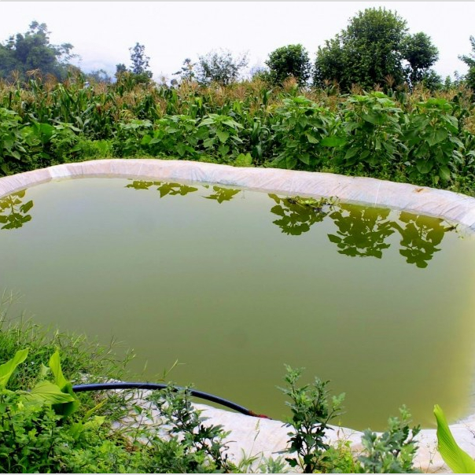
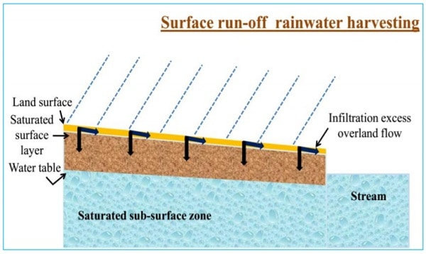
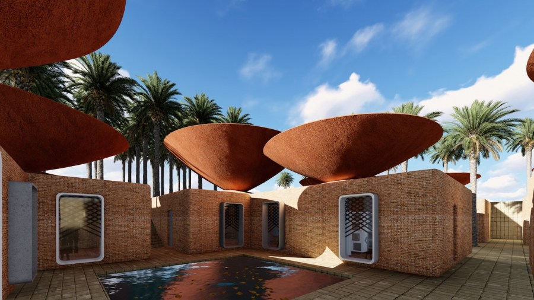
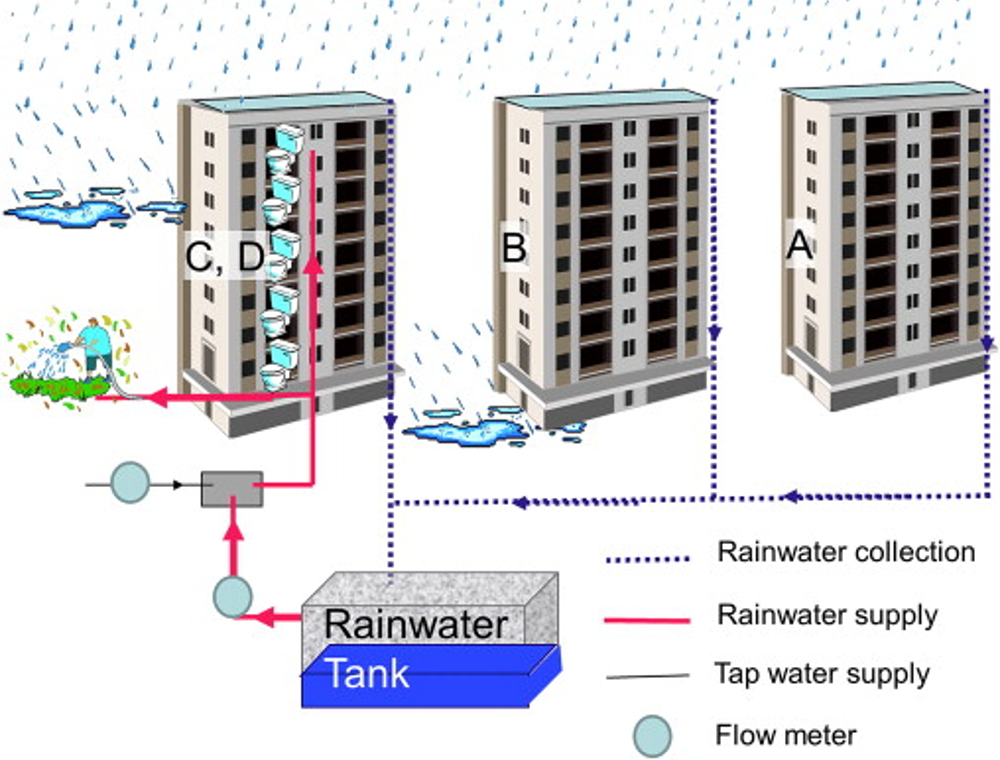

Rainwater harvesting is not only for residential applications, water needs in commercial and
industrial processes can cost thousands of dollars a year, not only that, but rainwater harvesting
helps new construction comply with stormwater regulations in retaining stormwater.
As the
population grows, cities and suburbs expand with more buildings and so the demand for water
continues to increase. The installation of a rainwater collection system is becoming increasingly
important for businesses and commercial organizations. Rainwater Harvesting is the first solution in
a water management strategy for commercial, public and residential buildings.
If you have a commercial property then you can save millions of gallons of drinking water each year with an eco-friendly approach known as Rainwater Harvesting. If you are looking for relevant information on Rainwater Harvesting then you are at the right place to get it. Rainwater collection system is a very cost-effective solution that brings great benefits to commercial buildings such as: office buildings, schools, hotels, resorts, hospitals, homes. goods, etc.
Rainwater harvesting in a public setting can be used for any non-potable water function. This includes:
RWH systems are gradually becoming part of sustainable water management and rainwater extraction is also
gaining popularity leading to ecological conservation. Most commercial buildings use a significant
amount of water and energy in their daily operations. Therefore, a rainwater harvesting system for
commercial buildings will significantly reduce the amount of water used from the grid.
For
better understanding, lets have a look at its methods. Majorly, there are two Rainwater Harvesting
methods as follows:
RWH using ground or land surface catchment areas is less complex way of collecting rainwater.
This technique is mainly suitable for storing water for agricultural purposes.

Surface
Runoff Rainwater Harvesting is a method of collecting rainwater flowing along the ground during
the rains will be collected to a tank below the surface of the ground for irrigation and other
purposes. During storage of rainwater, it is important to incorporate efficient and effective
water conservation methods i.e. by reducing evaporation. It is a very easy to adopt technology
and very profitable if used accordingly. The main objective of surface runoff rainwater
harvesting method is to meet the ever increasing demand of water, to reduce water pollution,
soil erosion and flooding of roads.

➤ Help solving the water crisis to some extent.
➤ Reduce the runoff volume to great extent inside the city area.
➤ Reduction of Flood.
Commercial buidings are usually limited by area more than residential buildings, no system is
more suitable than a wet system for Rooftop Rainwater Harvesting. All collected rainwater will
run straight down, stored in an underground system for future uses.

Roof
Top Rainwater Harvesting is a method of collecting rain water where it falls and in which rain
water is captured from the roof catchments of domestic houses or commercial buildings and stored
in the tanks. Harvested rain water can either be stored in a tank or diverted to artificial
recharge system to meet the household/commercial needs through storage in tanks. This method is
simple, eco-friendly, less expensive and truly effective. Roof-top rainwater harvesting method
(RRH) involves diverting and recharging (or) storing rainwater that falls on the roof of a
house/building. The main objective of rooftop rain water harvesting is to make water available
for future use, to improve quality of ground water and etc.

➤ Provides self-sufficiency to water supply.
➤ Provides high-quality water that is soft and low in minerals.
➤ Reduces soil erosion in urban and rural areas.